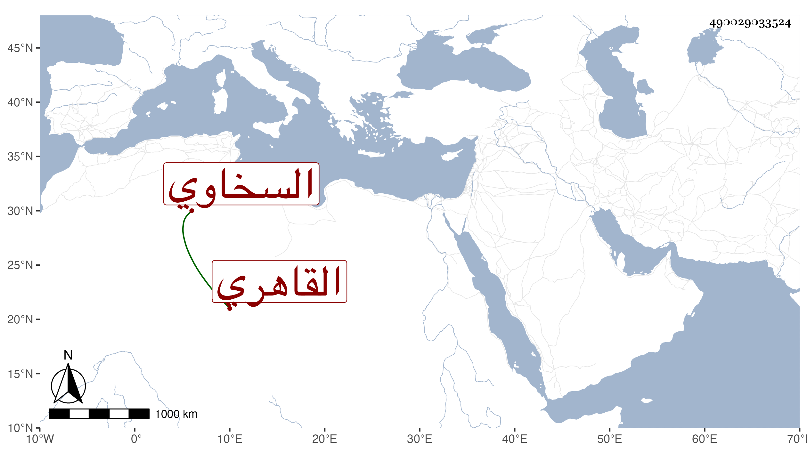

0902Sakhawi.DawLamic.ITO20230111-ara1.EIS1600.490029033524
Biography ID: 490029033524
643
فاطمة ابنة محمد بن أبي بكر بن عثمان السخاوي القاهري عمتي شقيقة الوالد وكانت أسن منه ، نشأت في عفة وصيانة فأتقنت التطريز والتنبيت وما أشبه ذلك وعكف عليها بنات جيرانها للتعليم ورزقت عدة أولاد ماتوا في حياتها ، ولم تر حظا من الأزواج بل كانت جل عمرها في رفد الوالد ، وحجت غيرة مرة منها مرة معه وجاورت بأخرة ولا أستبعد حضورها ميعاد السراج البلقيني وولديه لمجاورتها لهم واختصاصها وأهلها ببيتهم ، ماتت في رجب سنة سبع وخمسين وأظنها قاربت السبعين أو جاوزتها وكان لها مشهد حافل وصلى عليها في جامع الحاكم تقدم الناس العلم البلقيني ودفنت بجوار سلفها من حوش الصوفية البيبرسية رحمها الله وايانا وعوضها خيرا .
